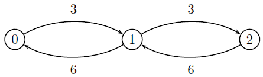
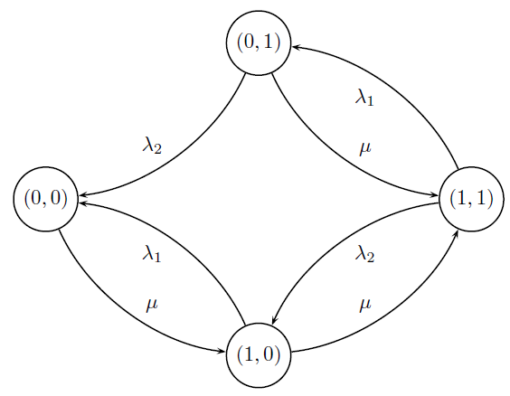
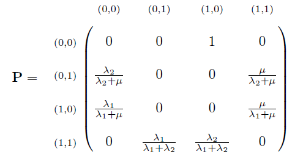
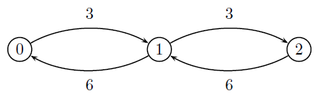
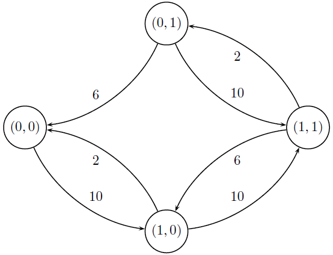
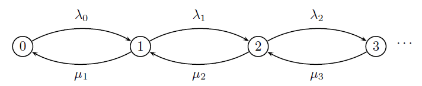

5 Cadeias de Markov a Tempo Contínuo
5.1 Definição e Exemplos
Definição
Definição 5.1 Seja \(\{X(t),t\geq 0\}\) um processo estocástico com espaço do tempo igual a \([0,\infty)\) e espaço dos estados \(D\subseteq\mathbb{Z}\). Esse processo será uma cadeia de Markov a tempo contínuo (CMTC) se para todo \(s,t\geq 0\) e para os inteiros \(i,j\) e \(x(u)\), com \(0\leq u<s\),
\[\begin{align} P(X(t+s)=j|X(s)=i,X(u)=x(u), 0\leq u<s)=P(X(t+s)=j|X(s)=i). \end{align}\]A Equação acima é conhecida como propriedade de Markov para processos a tempo contínuo.
Definição
Definição 5.2 Quando o processo entra em um estado \(i\), o tempo gasto para deixá-lo é denominado tempo de espera.
Para uma CMTC, a probabilidade do processo estar no estado \(j\) no tempo \(t+s\) sabendo que o processo esteve em \(i\) no tempo \(s\) é dada por
\[ p_{ij}(t+s,s)=P(X(t+s)=j|X(s)=i). \]
Notemos que a probabilidade acima considera o estado inicial, e o intervalo de tempo \([s,s+t)\). Se \(p_{ij}(t+s_1,s_1)=p_{ij}(t+s_2,s_2)\) para qualquer escolha de \(s_1\) e \(s_2\), dizemos que o processo é homogêneo (nesse caso, a probabilidade depende do comprimento do intervalo de tempo e não do tempo em si).
Definição
Definição 5.3 Denotaremos a probabilidade de transição em um tempo \(t\) para uma CMTC homogênea por \[\begin{equation} p_{ij}(t):=P(X(t)=j|X(0)=i). \end{equation}\]
Neste curso lidaremos apenas com CMTC homogêneas.
Existe outro modo de definir uma CMTC. Seja \(T_i\) o tempo de espera associado ao estado \(i\). Note que \(\{T_i>t\}\) implica que o processo esteve em \(i\) até o tempo \(t\), ou seja, implica em \(\{X(t)=i\}\). Assim, teremos que \[\begin{align} P(T_i>t+s|T_i>s)&= P(X(t+s)=i|X(s)=i)\notag\\ &=P(X(t)=i|X(0)=i)=P(T_i>t). \end{align}\] Assim, uma CMTC homogênea possui perda de memória e, portanto, \(T_i\) tem distribuição exponencial. Isto motiva a seguinte definição.
Definição
Definição 5.4 O processo estocástico \(\{X(t),t\geq 0\}\) com \(X(t)\in D\subseteq \mathbb{Z}\) é uma CMTC se
- \(T_i\sim \hbox{Exponencial}(\nu_i)\), com \(E(T_i)=\nu_i^{-1}\), para todo \(i\in D\).
- Os \(T\)’s são independentes.
Exemplo: Processo de Poisson
Exemplo 5.1 Seja \(N(t)\) um processo de Poisson com taxa \(\lambda\). Então o tempo que o processo gasta para sair do estado \(i\) é o tempo que leva para ocorrer um novo evento (ou seja, o tempo de espera). Então \(T_i\sim\hbox{Exponencial}(\lambda)\), e um processo de Poisson é uma CMTC.
Exemplo: Barbearia
Exemplo 5.2 Uma pequena barbearia possui uma cadeira para realizar seus serviços e outra para um cliente aguardar atendimento. Considere os seguintes estados:
- 0 - a barbearia está vazia.
- 1 - existe um cliente sendo atendido.
- 2 - existe um cliente sendo antedido e outro esperando.
Existem outras barbearias por perto, de modo que nenhum cliente gostaria de esperar em pé (assim, a barbearia só pode ter no máximo dois clientes). Seja \(X(t)\) o número de clientes na barbearia no tempo \(t\). Notemos que \(X(t)\in D=\{0,1,2\}\). Sabe-se que o número clientes procurando o serviço segue um processo de Poisson com taxa 3 clientes por hora. Assim, o tempo entre as chegadas possui distribuição exponencial com média 1/3 (em horas). Sabe-se também que o tempo para atender um cliente tem distribuição exponencial com média 10 min (ou 1/6 horas).
Assim, o tempo de espera no estado 0 tem distribuição Exponencial(\(3\)) (a barbearia está vazia e chega um cliente). Se mostrarmos que os outros tempos de espera possuem distribuição exponencial, teremos que \(X(t)\) será uma CMTC.
No caso do processo de Poisson, assim que o processo abandona o estado \(i\) ele automaticamente entra no estado \(i+1\). Mas nada impede que um particular estado de outras CMTC tenha várias opções de estados para visitar. Considere que, a partir do estado \(i\), o processo pode alcançar imediatamente \(k\) estados, denotados por \(j_1,\ldots,j_k\). Seja \(T_{ij}\) o tempo que o estado leva para abandonar o estado \(i\) e fazer uma transição para o estado \(j\). Como o processo é uma CMTC, temos que \(T_{ij}\sim\hbox{Exponencial}(\nu_{ij})\). E o que podemos dizer sobre \(T_i\) (o tempo que o processo demora para abandonar \(i\) sem se importar para o estado de destino)?
Proposição
Proposição 5.1 Considere que os estados \(j_1,\ldots,j_k\) são acessíveis a partir de \(i\). Seja \(\nu_{ij}\) a taxa do tempo de espera do estado \(i\) para o estado \(j\). Então \(T_i\sim\hbox{Exponencial}(\nu_i)\), onde \(\nu_i = \nu_{ij_{1}}+\cdots +\nu_{ij_{1}}\).
Demonstração: Existem \(k\) possibilidades para o processo, cada uma com seu tempo de ocorrência independente das demais. Assim, \(T_i\) será o menor tempo de ocorrência entre \(T_{ij_1},\ldots,T_{ij_k}\). Mas, sabemos do Exemplo 6.8 que \(T_i=\min\{T_{ij_1},\ldots,T_{ij_k}\}\sim\hbox{Exponencial}(\nu_i)\), onde \(\nu_i=\nu_{ij_1}+\cdots+\nu_{ij_k}\).
Estando no estado \(i\), existe a possibilidade do processo fazer uma transição para diversos estados. Essa transição, independente do tempo de espera, será denominada simplesmente por probabilidade de transição e será denotada por \(p_{ij}\).
Proposição
Proposição 5.2 onsidere que os estados \(j_1,\ldots,j_k\) são acessíveis a partir de \(i\). Seja \(\nu_{ij}\) a taxa do tempo de espera do estado \(i\) para o estado \(j\). Então \[\begin{equation} p_{ij}=\frac{\nu_{ij}}{\nu_i},\quad j=j_1,\ldots,j_k \end{equation}\] onde \(\nu_i=\sum_{l=1}^{k}\nu_{ij_l}\) é a taxa do tempo de espera do estado \(i\).
Demonstração: É uma generalização do Exemplo 6.9 e já foi resolvido no Exercício 6.20.
De posse destes resultados, podemos construir um grafo para a CMTC de forma semelhante ao que foi feito no Capítulo 4:
- Os vértices do grafo são os estados do processo.
- Se \(i\rightarrow j\), então existe um arco, saindo de \(i\) e chegando em \(j\).
- Cada arco \((i,j)\) recebe o valor \(\nu_{ij}\).
A partir da construção do grafo, as seguintes operações são verdadeiras:
- \(\nu_i=\)soma dos arcos de saem de \(i\).
- \(p_{ij}=\frac{\text{arco (i,j)}}{\nu_i}\)
Exemplo: Barbearia revisitado
Exemplo 5.3 Considerando a barbearia do Exemplo 5.2, temos os seguintes estados:
- 0 - a barbearia está vazia.
- 1 - existe um cliente sendo atendido.
- 2 - existe um cliente sendo antedido e outro esperando.
As possíveis transições são:
- \(0\rightarrow 1\) - a barbearia estava vazia e entrou um cliente.
- \(1\rightarrow 0\) - havia apenas um cliente e ele foi antedido e abandonou a barbearia.
- \(1\rightarrow 2\) - havia um cliente sendo atendido e, neste meio tempo, um novo cliente entrou.
- \(2\rightarrow 1\) - o serviço de um cliente termino e o serviço do que estava esperando começou.
O tempo de chegada de potenciais clientes tem distribuição exponencial com taxa \(3\) clientes por hora e o tempo de atendimento tem distribuição exponencial com taxa \(6\) clientes por hora. É natural assumir que estes tempos são independentes. Disto, temos que:
- \(T_{01}\sim\hbox{Exponencial}(3)\) (só pode ter ocorrido uma chegada)
- \(T_{10}\sim\hbox{Exponencial}(6)\) (só pode ter ocorrido a execução de um serviço)
- \(T_{12}\sim\hbox{Exponencial}(6)\) (só pode ter ocorrido uma chegada)
- \(T_{21}\sim\hbox{Exponencial}(6)\) (só pode ter ocorrido a execução de um serviço)
e, disto:
\(T_0=T_{01}\sim\hbox{Exponencial}(3)\)
\(T_1=\min\{T_{10},T_{12}\}\sim\hbox{Exponencial}(9)\)
\(T_2=T_{21}\sim\hbox{Exponencial}(6)\).
Como todos os tempos de abandono possuem distribuição exponencial e são independentes, este processo é uma CMTC e seu grafo é dado abaixo:
As probabilidades de transição são dadas na matriz abaixo:

Exemplo: Máquinas I
Exemplo 5.4 Uma fábrica possui duas máquinas, \(A\) e \(B\), e um único mecânico para consertá-las. Elas funcionam por um tempo \(T_A\) e \(T_B\), onde \(T_i\sim\hbox{Exponencial}(\lambda_i),\; i\in\{A,B\}\). Assim que quebram, o tempo que o mecânico leva para consertá-las tem distribuição exponencial com média \(1/\mu\). Se ambas estiverem quebradas, ele consertará a máquina \(A\) primeiro. Seja \(\{ (a,b)_t,t\geq 0\}\) um processo estocástico onde \(a,b\in\{0,1\}\), onde os estados representam:
- \((0,0)\) - ambas as máquinas estão quebradas.
- \((0,1)\) - a máquina \(A\) está quebrada e a máquina \(B\) está funcionando.
- \((1,0)\) - a máquina \(B\) está quebrada e a máquina \(A\) está funcionando.
- \((1,1)\) - ambas as máquinas estão funcionando.
O grafo desta cadeia é dado abaixo:

Como os tempos de quebra e conserto são independentes, temos que:
- \(T_{(0,0)}\sim\hbox{Exponencial}(\mu)\)
- \(T_{(1,0)}\sim\hbox{Exponencial}(\mu+\lambda_1)\)
- \(T_{(0,1)}\sim\hbox{Exponencial}(\mu+\lambda_2)\)
- \(T_{(1,1)}\sim\hbox{Exponencial}(\lambda_1+\lambda_2)\)
As probabilidades de transição são:

5.2 Distribuição Estacionária
De modo análogo ao que foi mostrado em CMTD, é possível observar que, sob certas condições, \(p_{ij}(t)\) se aproxima de uma constante com o crescimento de \(t\). Estamos interessados em saber em quais condições existe o limite \[\pi_j :=\lim_{t\rightarrow\infty}p_{ij}(t)>0.\] Essas condições são dados no Teorema a seguir.
Teorema
Teorema 5.1 Considere uma CMTC onde:
- todos os estados se comunicam;
- sua única classe é recorrente positiva.
Então, existe a distribuição estacionária \(\pi_j\), dada por \[\begin{align} \nu_j\pi_j = \sum_{k\neq j} \nu_{kj}\pi_k, \quad\forall j. \label{eq::balanco_continuo}\end{align}\] com a restrição de que \(\sum_{k}\pi_k=1\).
A equação acima é denominada equação de balanço.
Exemplo: Barbearia - conclusão
Exemplo 5.5 Vamos voltar ao Exemplo 5.2. Neste, o processo \(\{X(t),t>0\}\), onde \(X(t)\in\{0,1,2\}\) era uma CMTC, com \(X(t)\) sendo o número de usuários no estabelecimento. O grafo desta cadeia está reproduzido abaixo:

Gostaríamos de saber qual a proporção do tempo em que a barbearia está vazia. Isto pode ser calculado encontrando a distribuição estacionária do processo, que é equivalente a resolver o seguinte sistema
\[\nu_0\pi_0 =\nu_{10}\pi_1 + \nu_{20}\pi_2\Rightarrow 3\pi_0=6\pi_1 \\ \] \[ \nu_1\pi_1 =\nu_{01}\pi_0 + \nu_{21}\pi_2\Rightarrow 9\pi_1=3\pi_0+6\pi_2\\ \] \[ \nu_2\pi_2=\nu_{02}\pi_0 + \nu_{12}\pi_1\Rightarrow 6\pi_2=3\pi_1\\ \] \[ \pi_0+\pi_1+\pi_2=1 \]
cuja solução é \({\pi}=(4/7,2/7,1/7)\) e a proporção do tempo em que a barbearia fica vazia é dada por \(2/14\approx 57,28\%\) das vezes. Assim, o barbeiro passa 57,28% do seu tempo ocioso.
Exemplo: Máquinas I - revisitado
Exemplo 5.6 Consideremos novamente o Exemplo 5.4, cujos os estados representam o funcionamento de cada máquina (1- máquina funciona, 0 - não funciona). Considere que o tempo que a máquina 1 funciona possui distribuição exponencial com taxa 2 falhas por mês, assim como o tempo da máquina 2, com uma taxa de 6 falhas/mês). Considere ainda que o tempo de conserto possui distribuição exponencial com taxa 10 consertos por mês. O grafo desta cadeia é dado abaixo:

As equações de balanço (com a restrição \(\sum_k \pi_k=1\)) são
\[ \begin{align*} \nu_{(0,0)}\pi_{(0,0)} &=\nu_{(1,0),(0,0)}\pi_{(1,0)}+\nu_{(0,1),(0,0)}\pi_{(0,1)}\\ \nu_{(0,1)}\pi_{(0,1)} &=\nu_{(1,1),(0,1)}\pi_{(1,1)}\\ \nu_{(1,0)}\pi_{(1,0)} &=\nu_{(0,0),(1,0)}\pi_{(0,0)}+\nu_{(1,1),(1,0)}\pi_{(1,1)}\\ \nu_{(1,1)}\pi_{(1,1)} &=\nu_{(0,1),(1,1)}\pi_{(0,1)}+\nu_{(1,0),(1,1)}\pi_{(1,0)}\\ \pi_{(0,0)}&+\pi_{(0,1)}+\pi_{(1,0)}+\pi_{(1,1)}=1. \end{align*} \]
A resolução do sistema (arredondando em duas casas decimais) é \(\pi_{(0,0)}=0,1\), \(\pi_{(0,1)}=0,06\), \(\pi_{(1,0)}=0,34\) e \(\pi_{(1,1)}=0,50\). Podemos dizer, por exemplo, que a proporção do tempo em que as duas máquinas estão funcionando juntas é de 50%.
5.3 Processos de Nascimento e Morte
Seja \(X(t)\) o número de indivíduos em certo sistema no tempo \(t\). Em cada instante de tempo, um indivíduo pode entrar ou sair do sistema. Se \(\{X(t),t\geq 0\}\) é uma CMTC, esta é denominada Processo de Nascimento e Morte (PNM). Seja \(T_{ij}\) o tempo espera para uma transição do estado \(i\) para \(j\in\{i-1,i+1\}\). Então
\(T_{i,i+1}\sim\hbox{Exponencial}(\lambda_i);\)
\(T_{i,i-1}\sim\hbox{Exponencial}(\mu_i);\)
\(T_0\sim\hbox{Exponencial}(\lambda_0);\)
\(T_i=\min\{T_{i,i-1},T_{i,i+1}\}\sim\hbox{Exponencial}(\lambda_i+\mu_i).\)
As taxas \(\lambda_i\) e \(\mu_i\) são denominadas taxas de nascimento e morte, respectivamente. O grafo típico de um PNM é

É imediato que em um PNM, \[p_{i,i+1}=\frac{\lambda_i}{\lambda_i+\mu_i},\] e que \[p_{i,i-1}=1-p_{i,i+1}.\] Com estas informações, podemos encontrar a distribuição estacionária deste processo.
Proposição: Distribuição estacionária
Proposição 5.3 Seja \(\{X(t),t\geq 0\}\) um PNM. Então, se \(\lambda_i,\mu_i\neq 0\) e se \[\sum_{j=1}^\infty\prod_{i=1}^{j}\frac{\lambda_{i-1}}{\mu_i}<\infty,\] a distribuição limite deste processo será
\[\begin{equation}\label{eq::prob_limite_CC} \pi_j = \left\{\begin{array}{ll} \left(1+\sum_{j=1}^\infty\prod_{i=1}^{j}\frac{\lambda_{i-1}}{\mu_i}\right)^{-1} & j=0 \\ \left(\prod_{i=1}^j\frac{\lambda_{i-1}}{\mu_i}\right)\left(1+\sum_{j=1}^\infty\prod_{i=1}^{j}\frac{\lambda_{i-1}}{\mu_i}\right)^{-1} & j>0. \end{array}\right. \end{equation}\]Demonstração:
As restrições \(\mu_j\neq 0\) e \(\lambda_j\neq 0\) servem para garantir que a cadeia seja irredutível. Resta saber se ela é recorrente positiva, o que ocorrerá se e somente se a distribuição estacionária for não nula. Assim, temos que \[\begin{equation} \lambda_0\pi_0 = \sum_{k\neq 0}\textcolor{blue}{\nu}_{k0}\pi_k=\nu_{10}\pi_1=\mu_1\pi_1\Rightarrow \pi_1=\frac{\lambda_0}{\mu_1}\pi_0. \end{equation}\]
Agora observe que, para qualquer \(j>0\), teremos
\[\begin{align} \nu_j\pi_j &=\sum_{k\neq j}\nu_{kj}\pi_k=\nu_{j+1,j}\pi_{j+1}+\nu_{j-1,j}\pi_{j-1} \notag \\ &=\mu_{j+1}\pi_{j+1} + \lambda_{j-1}\pi_{j-1} . \end{align}\]Aplicando a equação acima utilizando \(j=1\), e utilizando a equação anterior, teremos,
\[\begin{align*} (\lambda_1+\mu_1)\pi_1=\pi_2\mu_2+\lambda_0\pi_0 &\Rightarrow (\lambda_1+\mu_1)\frac{\lambda_0}{\mu_1}\pi_0 = \pi_2\mu_2+\lambda_0\pi_0\\ & \pi_2 = \frac{\lambda_0\lambda_1}{\mu_1\mu_2}\pi_0. \end{align*}\]Suponha que, \(\pi_j = \prod_{i=1^j}\lambda_{i-1}\mu_i\) é verdade para \(j=1,\ldots,n\). Então, seguindo um raciocínio análogo ao que foi feito para o caso \(j=1\), teremos
\[\begin{align*} &(\lambda_n+\mu_n)\pi_n = \mu_{n+1}\pi_{n+1}+\lambda_{n-1}\pi_{n-1} \\ &\Rightarrow (\lambda_n+\mu_n)\prod_{i=1}^n\frac{\lambda_{i-1}}{\mu_i}\pi_0 = \mu_{n+1}\pi_{n+1} + \lambda_{n-1}\prod_{i=1}^{n-1}\frac{\lambda_{i-1}}{\mu_i}\pi_0 \\ &\Rightarrow \pi_{n+1}=\frac{\pi_0}{\mu_{n+1}}\prod_{i=1}^{n-1}\frac{\lambda_{i-1}}{\mu_i}\left\{(\lambda_n+\mu_n)\frac{\lambda_{n-1}}{\mu_n}-\lambda_{n-1}\right\}\\ &\Rightarrow \pi_n = \pi_0\prod_{i=1}^n\frac{\lambda_{i-1}}{\mu_i}. \end{align*}\]Portanto, mostramos por indução que cada probabilidade \(\pi_j\), com \(j>0\), pode ser escrita como função de \(\pi_0\). Agora, notemos que
\[\begin{align*} &1=\sum_{j=0}^\infty \pi_j = \pi_0+\sum_{j=1}^\infty = \pi_0 +\pi_0\sum_{j=1}^{\infty}\prod_{i=1}^j\frac{\lambda_{i-1}}{\mu_i}\\ &\Rightarrow \pi_0= \left(1+\sum_{j=1}^{\infty}\prod_{i=1}^{j}\frac{\lambda_{i-1}}{\mu_i}\right)^{-1}, \end{align*}\]e, para qualquer \(j>0\),
\[\begin{align*} \pi_j = \pi_0\prod_{i=1}^j\frac{\lambda_{i-1}}{\mu_i} = \left(\prod_{i=1}^j\frac{\lambda_{i-1}}{\mu_i}\right)\left(1+\sum_{j=1}^{\infty}\prod_{i=1}^{j}\frac{\lambda_{i-1}}{\mu_i}\right)^{-1}. \end{align*}\]Organizar o seguinte quadro pode ser útil para encontrar a distribuição estacionária:
| \(i\)(estados) | 1 | 2 | \(\cdots\) | \(n-1\) | \(n\) | Total |
|---|---|---|---|---|---|---|
| \(\lambda_{i-1}\) | \(\lambda_0\) | \(\lambda_1\) | \(\cdots\) | \(\lambda_{n-2}\) | \(\lambda_{n-1}\) | - |
| \(\mu_{i-1}\) | \(\mu_1\) | \(\mu_2\) | \(\cdots\) | \(\mu_{n-1}\) | \(\mu_n\) | - |
| \(\frac{\lambda_{i-1}}{\mu_i}\) | \(\frac{\lambda_0}{\mu_1}\) | \(\frac{\lambda_1}{\mu_2}\) | \(\cdots\) | \(\frac{\lambda_{n-2}}{\mu_{n-1}}\) | \(\frac{\lambda_{n-1}}{\mu_n}\) | - |
| \(\prod_{j=1}^i\frac{\lambda_{j-1}}{\mu_j}\) | \(\frac{\lambda_0}{\mu_1}\) | \(\frac{\lambda_0}{\mu_1}\frac{\lambda_1}{\mu_2}\) | \(\cdots\) | \(\frac{\lambda_0}{\mu_1}\frac{\lambda_1}{\mu_2}\cdots\frac{\lambda_{n-2}}{\mu_{n-1}}\) | \(\frac{\lambda_0}{\mu_1}\frac{\lambda_1}{\mu_2}\cdots\frac{\lambda_{n-1}}{\mu_n}\) | \(\sum_{i=1}^n \prod_{j=1}^i\frac{\lambda_{j-1}}{\mu_j}\) |
Exemplo: Fila M/M/1
Exemplo 5.7 Clientes chegam a uma estação de serviço segundo um processo de Poisson com taxa \(\lambda\). Os clientes entram em fila única e são atendidos por um único servidor. Seja \(U_i\) o tempo que o servidor demora para o \(i\)-ésimo cliente e considere que \(U_i\sim\hbox{Exponencial}(\mu)\), com \(T_i\) independente de \(T_j\) para todo \(i\neq j\). Por último, seja \(X(t)\) o número de clientes na estação de serviço no tempo \(t\). É fácil ver que \(\{X(t),t\geq 0\}\) é um PNM. De fato, seja \(T_{ij}\) o tempo que o processo leva para fazer uma transição do estado \(i\) para o estado \(j\). Então
- \(T_{i,i+1}\sim\hbox{Exponencial}(\lambda)\) (tempo de uma chegada)
- \(T_{i,i-1}\sim\hbox{Exponencial}(\mu)\) (tempo de um atendimento)
- \(T_{i,j}\) não ocorre para qualquer \(j\neq\{i-1,i+1\}\).
- Todos os tempos envolvidos são independentes entre si.
As taxas de nascimento e morte são \(\lambda_i=\lambda\) e \(\mu_j=\mu\) para \(i=0,1,2,\ldots\) e \(j=1,2,3,\ldots\). Então,
| \(i\)(estados) | 1 | 2 | \(\cdots\) | \(n-1\) | \(n\) | Total |
|---|---|---|---|---|---|---|
| \(\lambda_{i-1}\) | \(\lambda\) | \(\lambda\) | \(\cdots\) | \(\lambda\) | \(\lambda\) | - |
| \(\mu_{i-1}\) | \(\mu\) | \(\mu\) | \(\cdots\) | \(\mu\) | \(\mu\) | - |
| \(\frac{\lambda_{i-1}}{\mu_i}\) | \(\frac{\lambda}{\mu}\) | \(\frac{\lambda}{\mu}\) | \(\cdots\) | \(\frac{\lambda}{\mu}\) | \(\frac{\lambda}{\mu}\) | - |
| \(\prod_{j=1}^i\frac{\lambda_{j-1}}{\mu_j}\) | \(\frac{\lambda}{\mu}\) | \(\left(\frac{\lambda}{\mu}\right)^2\) | \(\cdots\) | \(\left(\frac{\lambda}{\mu}\right)^{n-1}\) | \(\left(\frac{\lambda}{\mu}\right)^n\) | \(\sum_{i=1}^n \left(\frac{\lambda}{\mu}\right)^n\) |
Portanto, existirá distribuição estacionária se \[\sum_{i=1}^\infty\left(\frac{\lambda}{\mu}\right) ^i<\infty\] Notando que se trata da soma de uma progressão geométrica, sabemos que a série acima será convergente somente se \(\lambda / \mu <1\) (ou seja, a taxa de morte é maior que a de nascimento). Neste caso, teremos que \[\sum_{i=1}^\infty\left(\frac{\lambda}{\mu}\right) ^i=\frac{\lambda/\mu}{1-\lambda/\mu}=\frac{\lambda}{\mu - \lambda},\] o que implica em \[\pi_0=\left[1+\frac{\lambda}{\mu - \lambda}\right]^{-1}=\frac{\mu-\lambda}{\mu}=1-\frac{\lambda}{\mu}\] e, para \(j>0\), \[\pi_j=\left(\frac{\lambda}{\mu}\right)^j\left(1-\frac{\lambda}{\mu}\right).\] Portanto, \[\begin{align*} \pi_j = \left(\frac{\lambda}{\mu}\right)^j\left(1-\frac{\lambda}{\mu}\right),\quad j=0,1,2,\ldots \end{align*}\] Assim, a distribuição estacionária deste processo é Geométrica(\(1-\lambda/\mu\)).
Exemplo
Exemplo 5.8 Carros chegam em um posto de gasolina segundo um processo de Poisson com taxa \(20\) por hora. Este posto possui apenas uma bomba de gasolina e, se esta estiver ocupada, os demais clientes esperam em fila única. O tempo que um atendente leva para abastecer um carro possui distribuição exponencial com média 1/25 horas (aproximadamente 2,4 minutos). No regime estacionário, qual é a probabilidade do posto estar ocioso?
Respostas:
O número de clientes no tempo \(t\), denotado por \(X(t)\), é um PNM com \(\lambda_i=20\), \(i=0,1,2,\ldots\) e \(\mu_j=25\), \(j=1,2,3,\ldots\). Como \(\lambda<\mu\), existe distribuição estacionária, sendo esta uma Geométrica(1/5). Portanto, \[\pi_0=\frac{1}{5}=0,2.\]
5.4 Exercícios
Exercício 5.1 Suponha que um indivíduo unicelular pode estar em dois estados: \(A\) ou \(B\). Estando em \(A\), um indivíduo mudará para o estado \(B\) em tempo com distribuição exponencial com taxa \(\alpha\). Um indivíduo no estado \(B\) se divide em dois indivíduos no estado \(A\) em um tempo exponencial com taxa \(\beta\). Seja \(\{X(t),t\geq 0\}\) um processo estocástico onde \(X(t)=(a(t),b(t))\), sendo que \(a(t)\) e \(b(t)\) são o número de indivíduos dos tipos \(A\) e \(B\) no tempo \(t\), respectivamente. Encontre \(v_i\) e \(P_{ij}\).
Exercício 5.2 Duas máquinas que são consertadas por um único mecânico. A máquina \(i\) funciona por um tempo com distribuição exponencial com taxa \(\mu_i\), \(i=1,2\). Os tempos de reparo para qualquer máquina possuem distribuição exponencial com taxa \(\mu\). Seja \(X(t)\) o número de máquinas quebradas no tempo \(t\). Este processo é um processo de nascimento e morte?
Exercício 5.3 Clientes em potencial entram em uma estação de serviço com um único servidor de acordo com um processo de Poisson com taxa \(\lambda\). Entretanto, se houverem \(n\) clientes na estação, então o próximo cliente entrará no sistema com probabilidade \(\alpha_n\). Assumindo que o tempo de serviço tem distribuição exponencial com taxa \(\mu\), analise a cadeia como um processo de nascimento e morte, determinando as taxas de nascimento e morte.
Exercício 5.4 Clientes chegam em uma estação de serviço segundo um processo de Poisson com taxa 1 cliente por minuto. Existem dois servidores que recebem os clientes provenientes de uma fila única. O tempo de serviço de cada servidor é exponencialmente distribuído com taxa 2 clientes por minuto. Seja \(X(t)\) o número de clientes deste sistema.
- Mostre que \(X(t)\) é um processo de nascimento e morte.
- Encontre \(\nu_i\), \(\lambda_i\) e \(\mu_i\).
- Encontre a distribuição estacionária de \(X(t)\).
- A empresa ganha em média 1 unidade de dinheiro por cliente no sistema. Utilize a distribuição estacionária para calcular o ganho esperado da empresa.
Exercício 5.5 Cada indivíduo de certa população gera um novo indivíduo em um tempo com distribuição exponencial com taxa \(\lambda\) e morre em um tempo com distribuição exponencial com taxa \(\mu\). Além disso, um indivíduo imigra para a população em um tempo exponencial com taxa \(\theta\). Entretanto, a imigração não é permitida se o tamanho da população for maior ou igual a \(N\).
- Analise esta população como um processo de nascimento e morte, encontrando as taxas e a probabilidade de transição.
- Se \(N=3\), \(\theta=\lambda=1\) e \(\mu=2\), determine a proporção do tempo na qual a imigração está vetada.
Exercício 5.6 Clientes chegam ao pronto socorro de um hospital segundo um processo de Poisson com taxa 12 por hora. A probabilidade de que um paciente precise de intervenção imediata é de 1/3. Os pacientes que precisam de intervenção imediata são encaminhados para uma fila com um único servidor, cujo tempo de atendimento possui distribuição exponencial com média 1/8 horas. Os demais pacientes são enviados para outra fila, também com um único servidor, com tempo de serviço exponencialmente distribuído com taxa 16 pacientes por hora. Calcule a probabilidade (estacionária) do hospital não ter pacientes para serem atendidos.
Exercício 5.7 Seja \(X(t)\) um processo de Poisson. Para \(k>1\) inteiro e \(X(t)\geq 1\), se \(X(t)\) for múltiplo de \(k\), então \(N(t)=1\). Em caso contrário, \(N(t)=0\).
- Mostre que \(N(t)\) é uma cadeia de Markov para \(k=2\).
- Para \(k=2\), encontre a distribuição estacionária de \(N(t)\).
- Mostre que para \(k>2\) \(N(t)\) não é uma cadeia de Markov.
Exercício 5.8 Seja \(\{X(t),t\geq 0\}\) uma CMTC e seja \(S=\{0,1\}\) seu espaço dos estados. Considere ainda que os tempos de transição \(T_{01}\) e \(T_{10}\) são identicamente distribuídos. Seja \(N(t)\) o número de vezes que o processo mudou de estado, até o tempo \(t\geq 0\). Encontre \(P(N(t)=n)\).